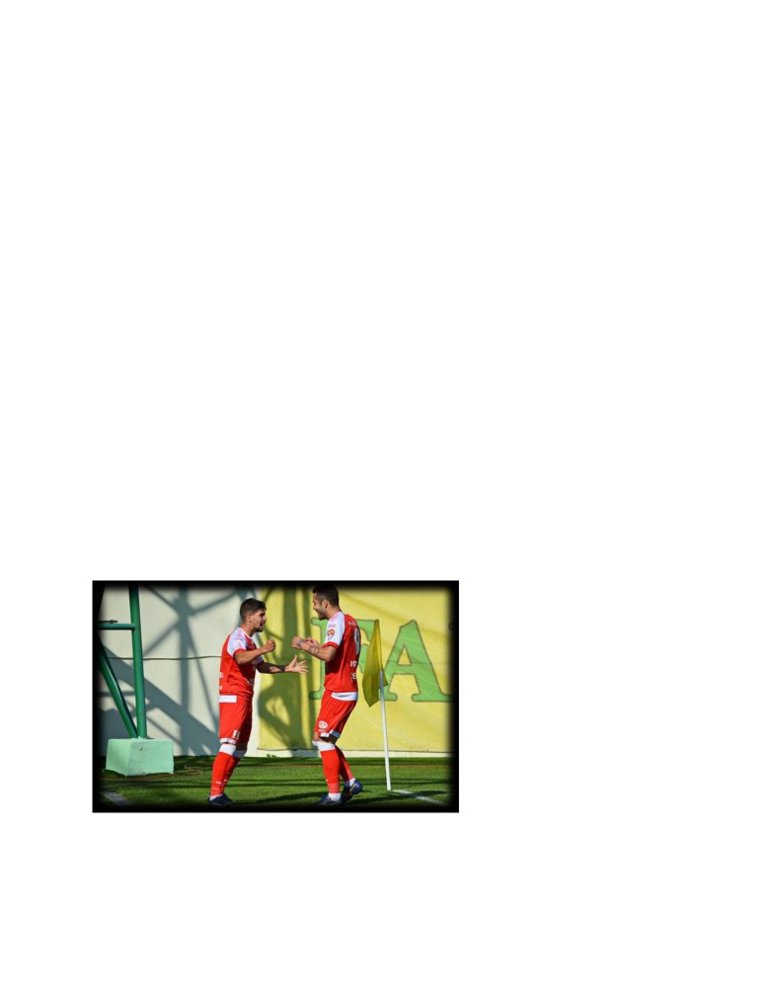

Corona virus schimbă jocul. ,,Fără al 12-lea jucător meciurile par
mai grele’’ declară fotbalistul Utei rad, Ursu Octavian
Covid-19 afctează lumea fotbalului, impunând reguli noi și măsuri de precauție stricte în ceea ce
privește fotabliștii. Pandemia a întrerupt antrenamentele, meciurile programate și i-a obligat pe
jucători să ramană în formă antrenandu-se online.
Fiecare echipă se antrena online și era nevoie de o dovadă a greutății în fiecare dimineață ca
fotbaliștii să nu iși piardă ritmul și pregătirea de campionat. lergările și unele antrenamente
erau monitorizate și trimise preparatorului fizic iar regimul alimentar era mulat după fiecare
jucător și nevoile acestuia. După revenirea la antrenamentele fizice cu echipa, măsurile de
precauție împotriva virusului au fost mult mai drastice iar testarea era obligatorie o dată la 10
zile. Jucătorii puteau apela la testele rapide în cazul în care nu se simțeau bine și nu trecuseră
cele 10 zile pentru o nouă testare. Nu sunt testați doar jucătorii și antrenorul, ci și staff-ul
tehnic, staff-ul medical șipersonalulde suport implicat în activitatea echipei.
Regulile în campionat s-au schimbat de cand îmbolnăviriile cu Sars Cov-19 au început să apară și
printre fotbaliști. ntrenorul are posibilitatea de a face 5 schimbări în timpul meciului nu 3, cum
era în mod obișnuit în regulament. Echipele trebuie să ajungă la stadion la ore diferite, astfel
echipa gazdă cu 75 de minute inaintea începerii jocului, iar echipa oaspete cu 90 de minute
înaintea orei de start a jocului. Dispunerea materialelor sprtive pe terenul de joc pentru
încălzirea jucătorilor va fi făcută astfel încat să susțină distanța de minimum 2 metri dintre
jucători. E obligatoriu ca bauturile folosite de jucători și staff să fie puse în sticle personalizate.
Federația Romană de fotbal a fixat cateva noi reguli ,, Cine nu se îmbolnăvește adună puncte,
cine iese pozitiv pierde meciurile la masa verde’’. Dacă una dintre echipe reprogramează un
meci din causa mai multor cazuri de covid, iardacă a doua oară echipa care a fost reprogramată
are și ea cazuri de covid și meciul un se poate disputa, prima echipă care a reprogramat pierde
la masa verde.
Uta rad este echipa nou promovată în liga 1 anul acesta. Echipa antrenată de Lazlo Balint și-a
petrecut perioada de izolare cu antrenamente online și alergări prin intermediul unor aplicații.
Fotbaliștii utei erau obligați să trimită poze cu căntarul în timpul izolării și să aibă o dietă
echilibrată impusă de nutriționistul echipei. Jucătorii primeau în fiecare zi programul de
antrenament de la preparatorul fizic al echipei iar aceștia fie trimiteau videoclipuri cu
antrenamentele fie făceau online pe diverse platforme.

Ursu Octavian mijlocașul dreapta al echipei ne povestește cum a reușit să rămană în formă în
perioada izolării și cum l-a ajutat acea perioadă în cariera sa de fotbalist. ,, ntrenamentele un
erau ușoare iar locurile în care trebuia să mă antrenez acasă un erau favorabile.’’ Ne-a povestit
jucătorul utei. cesta spune că un mereu avea recuzita necesară antrenamentelor și că trebuia
să improvizeze ,,doar eu știu unde așezam telefonul și prin ce păduri mergeam să alerg ca să
pot finaliza pregătirile impuse de antrenor’’. Revenirea pe teren și antrenamentele colective
aveau totuși un alt impact asupra jucătorilor cu toate că respectarea măsurilor de precauție
împotriva coronavirusului nu erau prea ușor de întreținut. Jucătorii aveau liber după meciuri iar
fiecare mergea acasă și după revenire nimeni nu putea fi sigur că a luat cea mai bună alegere de
a se proteja. Un jucător profesionist se gandește atat la sănătatea sa cat și a celor din jur, iar
cand cazurile de îmbolnăviri cu covid-19 au început să apară în vestiarul utei nimeni nu știa cine
e vinovatul care nu s-a protejat. Nu este ușor să stai departe de cei dragi și în zilele de pauză să
nu mergi acasă să iți vezi familia.
Meciurile fără spectatori nu sunt la fel ne-a mărturisit mijlocașul în varstă de 26 de ani, Octavian
Ursu, ,, fără suporterii care să ne încurajeze și să ne fie alături, cu tribunele goale meciurile par
mai grele, ne lipsește al 12-lea jucător’’. Susținătorii adevărați se strang în jurul stadionului și
încep să cante și să facă atmosferă cu toate că nu pot intra în tribune să-și susțină favoriții. Uta
beneficiză atat financiar cat și pe plan emoțional de ultrașii din arad. La fiecare meci aceștia
cumpără bilete online pentru a-i susține pe băieții lui Gyuszi Balint și ii încurajează inaintea
fiecărului meci pe pagina oficială a echipei. S-ar putea spune că suporterii sunt cei care suferă
cel mai mult în această perioadă, până ce acestă pandemie de coronoavirus nu se încheie
aceștia nu vor putea păși în tribune să fie al ,,12-lea jucător’’.
Ursu Octavian este unul dintre nefericiții fotbaliști care au de pierdut din cauza regulii impuse
de divizia A cu doi junior în teren. Majoritatea juniorilor de la Uta erau în benzi așa că
antrenorul apela mereu la aceștia știind că nu poate risca în alte părți cu aceștia, însă s-ar putea
spune că noua regulă cu 5 schimbări l-a ajutat pe mijlocașul stânga,Ursu, deoarece în cele mai
multe meciuri era prima schimbare înlocuind un junior. ,,Uneori simt că am fost neîndreptățit
de această regulă și de ghinionul de a avea juniorii pe post, dar consider că mereu am adus un
plus echipei când am intrat” ne-a povestit jucătorul Utei. Postul de titular poate fi uneori greu
de atins și de menținut, dar asta nu înseamnă că atunci când intri de pe banca de rezerve cu
forțe proaspete nu îți ajuți echipa. În partida dintre Uta și Poli Iași, Ursu a intrat în minutul 54 în
locul juniorului Tescan Dragoș și nu doar că a reușit să egaleze ci a înscris un gol de kinogramă
de la 30 de metri, gol care se bate la titlul Pușcaș. În acea seara Uta a fost învinsă cu 3-2 dar
performanța făcută de Ursu Octavian suntem siguri că va rămâne mult timp în cartea de istorie
a clubului rădean.
Trăim vremuri extrem de dificile, iar acest virus ne pune multe piedici însă doar adevărații
războinici pot face față adevăratelor provocări și să nu se dea bătuți. Trebuie să ne comformăm
perioadei în care trăim și să ne bucurăm cum putem în această perioadă critică.